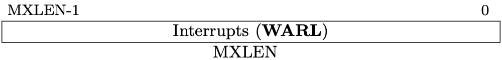
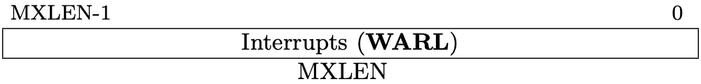
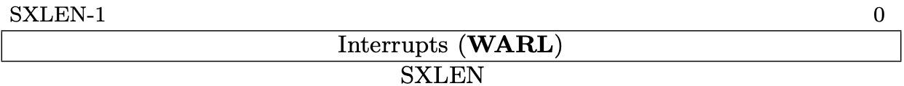
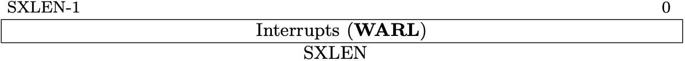

Control and Status Registers
This is a part of Writing a RISC-V Emulator in Rust. Our goal is running xv6, a small Unix-like OS, in your emulator eventually.
The source code used in this page is available at d0iasm/rvemu-for-book/03/.
The Goal of This Page
In this page, we will implement read-and-modify control and status registers (CSRs), which are defined at the Zicsr extension. CSRs are registers that store additional information of the result of instructions.
We will add Zicsr instructions, csrrw, csrrs, csrrc, csrrwi, csrrsi,
and csrrci, to read and write CSRs.
Control and Status Registers (CSRs)
Control and status register (CSR) is a register that stores various information in CPU. RISC-V defines a separate address space of 4096 CSRs so we can have at most 4096 CSRs. RISC-V only allocates a part of address space so we can add custom CSRs in unused addresses. Also, not all CSRs are required on all implementations.
Fig 3.1-3.3 list the machine-level and supervisor CSRs that are currently allocated CSR addresses. The next page will talk about what machine-level (M-mode) and supervisor-level (S-mode) are.
We will support a part of the allocated CSRs used in xv6-riscv. The book only describes them in the following sections.

Fig 3.1 Machine-level CSRs 1 (Source: Table 2.5: Currently allocated RISC-V machine-level CSR addresses. in Volume II: Privileged Architecture)

Fig 3.2 Machine-level CSRs 2 (Source: Table 2.6: Currently allocated RISC-V machine-level CSR addresses. in Volume II: Privileged Architecture)

Fig 3.3 Supervisor-level CSRs (Source: Table 2.3: Currently allocated RISC-V supervisor-level CSR addresses. in Volume II: Privileged Architecture)
Status Registers (mstatus/sstatus)
The status registers, mstatus for M-mode and sstatus for S-mode, keep track
of and control the CPU's current operating status.
mstatus is allocated at 0x300 and sstatus is allocated at 0x100. It
means we can access status registers by 0x300 and 0x100.
Fig 3.4 and Fig 3.5 represent the format of mstatus and sstatus. The length
of these regsiters is 64. Each bit is allocated to a different meaning and we
can tell the status to the CPU by setting/unsetting bits.
A restricted view of mstatus appears as the `sstatusw register.

Fig 3.4 mstatus register (Source: Figure 3.6: Machine-mode status register (mstatus) for RV64. in Volume II: Privileged Architecture)

Fig 3.5 sstatus register (Source: Figure 4.2: Supervisor-mode status register (mstatus) for RV64. in Volume II: Privileged Architecture)
MIE and SIE are global insterrupt bits, M for M-mode and S for S-mode.
When these bits are set, interrupts are globally enabled.
Trap-vector Base-address Registers (mtvec/stvecc)
The trap-vector base address registers, mtvec for M-mode and stvec for
S-mode, trap vector configuration. mtvec is allocated at 0x303 and stvec
is allocated at 0x105.

Fig 3.6 mtvec register (Source: Figure 3.9: Machine trap-vector base-address register (mtvec). in Volume II: Privileged Architecture)
BASE contains the destination address when trap (an exception or an
interrupt) occurs.
MODE can add alignment constraints on the value in BASE. When MODE is 0,
the next program counter is set to the value in BASE is used as it is. When
MODE is 1, the next program counter is set to the value of BASE + 4 ×
cause. The value of cause can be gotten in trap cause registers.
Machine Trap Delegation Registers (medeleg/mideleg)
The trap delegation registers, medeleg for machine-level exception delegation
and mideleg for machine-level interrupt delegation, indicate the certain
exceptions and interrupts should be directly by a lower privileged level.
medeleg is allocated at 0x302 and mideleg is allocated at 0x303.

Fig 3.7 medeleg register (Source: Figure 3.10: Machine Exception Delegation Register medeleg. in Volume II: Privileged Architecture)

Fig 3.8 mideleg register (Source: Figure 3.11: Machine Interrupt Delegation Register mideleg. in Volume II: Privileged Architecture)
By default, all trap should be handled in M-mode (highest privileged mode). These registers can delegate a corresponding trap to lower-level privileged mode.
Interrupt Registers (mip/mie/sip/sie)
The interrupt registers, mip and mie for M-mode and sip and sie for
S-mode, contain the information about interrupts. "ip" is the abbreviation of
"Interrupt Pending" and "ie" is "Interrupt Enable".
mip is allocated at 0x344, mie is 0x304, sip is 0x144, and sie is
0x104.

Fig 3.9 mip register (Source: Figure 3.12: Machine Interrupt-Pending Register (mip). in Volume II: Privileged Architecture)

Fig 3.10 mie register (Source: Figure 3.13: Machine Interrupt-Enable Register (mie). in Volume II: Privileged Architecture)

Fig 3.11 sip register (Source: Figure 4.4: Supervisor interrupt-pending register (sip). in Volume II: Privileged Architecture)

Fig 3.12 sie register (Source: Figure 4.5: Supervisor interrupt-enable register (sie). in Volume II: Privileged Architecture)
Exception Program Counters (mepc/sepc)
Trap Cause Registers (mcause/scause)
Trap Value Registers (mtval/stval)
Supervisor Address Translation and Protection Register (satp)
Add CSRs to CPU
First, we're going to add csrs field to Cpu structure. We now have 4 fields
including regs, pc, and bus in CPU.
cpu.rs
#![allow(unused)] fn main() { pub struct Cpu { pub regs: [u64; 32], pub pc: u64, /// Control and status registers. RISC-V ISA sets aside a 12-bit encoding /// space (csr[11:0]) for up to 4096 CSRs. pub csrs: [u64; 4096], pub bus: Bus, } }
Zicsr Standard Extension
Fig 3.99 is the list for instructions to read-modify-write CSRs. RISC-V calls the 6 instructions Zicsr standard extension.
A CSR specifier is encoded in the 12-bit csr field of the instruction placed
at 31–20 bits. There are 12 bits for specifying which CSR is selected so that we
have 4096 CSRs (=2**12). The uimm field is unsigned immediate value, a 5-bit
zero-extended.

Fig 3.99 RV64Zicsr Instruction Set (Source: RV32/RV64 Zicsr Standard Extension table in Volume I: Unprivileged ISA)